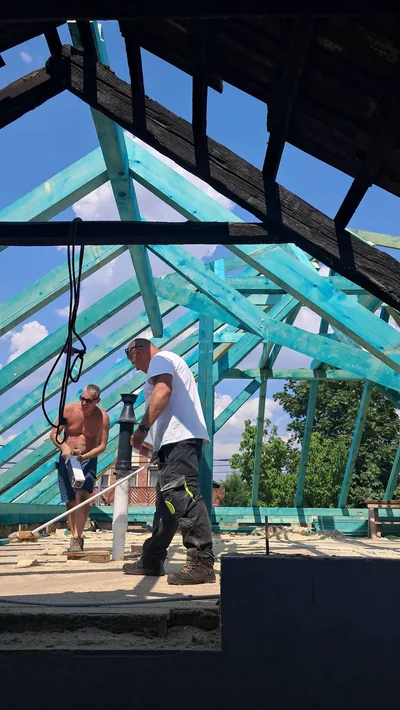
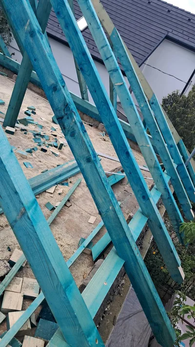
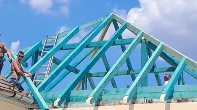
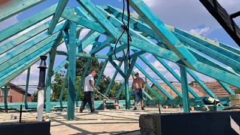
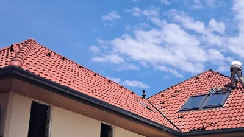
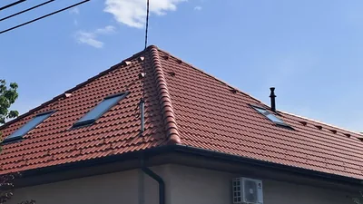
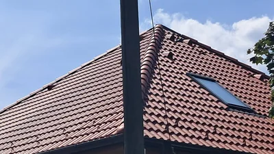
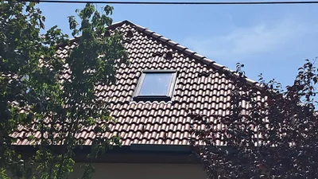

Projekt 03 · Ácsmunkák és tetőfedés
Tetőfelújítás tetőablakokkal Százhalombattán
A százhalombattai tetőfelújítás képein az új faelemek és szerkezeti kapcsolatok, a fóliázott és lécezett tetősíkok, majd a vörös cserépfedés látható. A kész fedésbe illeszkedő tetőablakokat és a csatlakozó tetősíkok részleteit a projekt több nézetből is bemutatja.
Százhalombatta · helyi munkáink ↗
A fotókon bemutatott munkák
- Fa tetőszerkezeti elemek és kapcsolatok
- A fedés előkészítése fóliázással és lécezéssel
- Cserépfedés és tetőablakok körüli részletek


01Régi és új faszerkezet

02Szarufák oldalnézetből

03A tetőváz összeállítása

04Munka a tetőszerkezetben 05A szerkezet részletei
05A szerkezet részletei 06A fedés előkészítése
06A fedés előkészítése 07Cserepezés és tetőablakok
07Cserepezés és tetőablakok

08A fedés befejező munkái 09Tetőablakok a kész fedésben
09Tetőablakok a kész fedésben

10Az új tető saroknézete

11Tetősík és tetőablak

12A tető a kert felőlBESZÉLJÜK ÁT A KÖVETKEZŐ MUNKÁT
Ácsmunka vagy tetőfedés Százhalombattán?
Mondja el a tervezett feladatot. A felmérésről és a vállalási időpontról telefonon egyeztetünk.